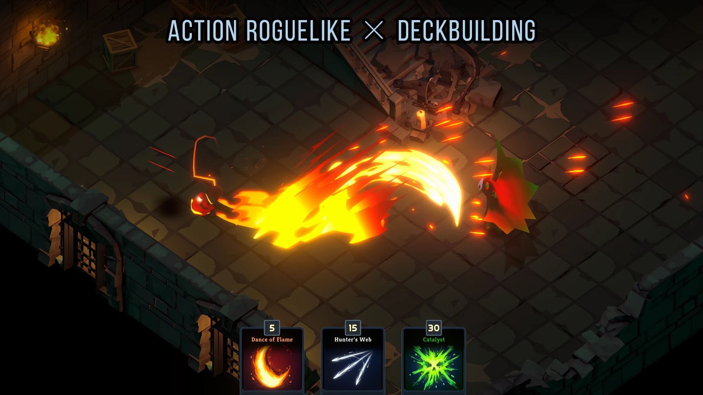

01 / Featured project · Developed Solo
Soulcery: Deck of Shadows
I designed and developed a fast-paced hack-and-slash action roguelike where players steal enemy abilities, build a deck, and chain spells with zero cooldowns.
- Architected scalable combat and progression systems around deck-based abilities.
- Refined input handling, attack timing, and hit feedback to make fast combos feel fluid and responsive.
- Took the project from the initial combat prototype to preparing the build for Steam release.
Top 40 Finalist · SEA Game Awards 2026